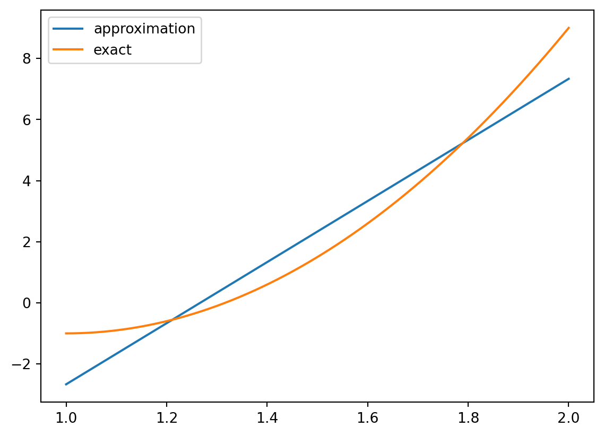

import sympy as sym
import numpy as np
import matplotlib.pyplot as plt
def least_squares(f, psi, Omega):
N = len(psi) - 1
A = sym.zeros(N+1, N+1)
b = sym.zeros(N+1, 1)
x = sym.Symbol('x')
for i in range(N+1):
for j in range(i, N+1):
A[i,j] = sym.integrate(psi[i]*psi[j],(x, Omega[0], Omega[1]))
A[j,i] = A[i,j]
b[i,0] = sym.integrate(psi[i]*f, (x, Omega[0], Omega[1]))
c = A.LUsolve(b)
# Note: c is a sympy Matrix object, solution is in c[:,0]
u = 0
for i in range(len(psi)):
u += c[i,0]*psi[i]
return u, cIntroduction to FEM
Introduction to FEM
FEM is a numerical method to aaproximate solved the differential equation by a finite number of points. The method is based on the idea that the solution of the differential equation can be approximated by a function that is a linear combination of a finite number of basis functions. The basis functions are chosen to be continuous and differentiable, and the coefficients of the linear combination are determined by the boundary conditions. The basis functions are usually chosen to be polynomials, but other functions can be used as well. The method is called finite element method because the basis functions are usually chosen to be piecewise polynomials, which are called finite elements. The method is also called finite element analysis because the method is used to analyze the behavior of structures.
Let vectorial space \(V\) be a Hilbert space, and let \(\{\phi_i\}\) be a set indepent linear of functions in \(V\). The function \(u\) is the solution of EDP, this can be approximate in linear combination of elements set \(\{\phi_i\}\), that is, \(u(x,y)=\sum_{i=1}^n c_i\phi_i(x,y)\), where \(c_i\) are the coefficients of the linear combination. The coefficients \(c_i\) are determined by the boundary conditions. The method is called finite element method because the basis functions are usually chosen to be piecewise polynomials, which are called finite elements. The method is also called finite element analysis because the method is used to analyze the behavior of structures.
Proyection to simple functions and square minimization
Let a vector \(u\), we can proyection this vector in a subspace \(V\), which has the element \(\{ \phi_0\}\), thus
\[u=c_0\phi_0\in V,\] we can definete the error \(e\) as \(e=u-c_0\phi_0.\) thus the norm is \[\|e\|^2=\|u-c_0\phi_0\|^2=\|u\|^2-2c_0\langle u,\phi_0\rangle+c_0^2\| \phi_0\|^2.\]
We can minimize the error \(e\) by choosing the coefficient \(c_0\) that minimize the error, thus we have \[\frac{\partial}{\partial c_0}\|e\|^2=0,\] and we have \[\frac{\partial}{\partial c_0}\|e\|^2=-2\langle u,\phi_0\rangle+2c_0\| \phi_0\|^2=0.\]
Thus we have \[c_0=\frac{\langle u,\phi_0\rangle}{\| \phi_0\|^2}.\]
Note that qe can be a proyection of \(u\) in \(V\) if we use the fact that \(e\) is orthogonal to \(V\), thus we have \[\langle e,s\phi_0\rangle=s\langle e,s\phi_0\rangle=0.\] then \(s=0\) or \(\langle e,\phi_0\rangle=0.\)
Note that in the proyection \(c_0=\frac{\langle u,\phi_0\rangle}{\| \phi_0\|^2}\), is similar to the minimization of the square error.
We can generalize this result to a set of functions \(\{\phi_i\}\), thus we have
\[u=\sum_{i=1}^n c_i\phi_i\in V,\] we can definete the error \(e\) as \(e=u-\sum_{i=1}^n c_i\phi_i.\) thus the norm is \[E=\|e\|^2=\|u-\sum_{i=1}^n c_i\phi_i\|^2=\|u\|^2-2\sum_{i=1}^n c_i\langle u,\phi_i\rangle+\sum_{q=0}^n\sum_{p=0}^n c_pc_q \langle\phi_p,\phi_q\rangle.\]
We can minimize the error \(e\) by choosing the coefficient \(c_i\) that minimize the error, thus we have
\[\frac{\partial}{\partial c_i}E=0,\ \ i=0,...N.\] Note that \[\frac{\partial}{\partial c_i}c_pc_q=\begin{cases}c_q & i=p \text{ and } q\neq i\\c_p & i\neq p \text{ and } q=i\\ 2c_i & i=p \text{ and } q= i\\ 0 & \text{otherwise}\end{cases}\]
Thus we have \[\frac{\partial}{\partial c_i}E=\sum_{p=0,p\neq i}^n c_p\langle \phi_p,\phi_q\rangle+\sum_{q=0,q\neq i}^nc_q \langle\phi_i,\phi_q\rangle+2c_i \langle\phi_i,\phi_i\rangle\]
Thus \[\frac{\partial}{\partial c_i}E=0,\ i=0,...N.\] implies \[-2f\langle u,\phi_i\rangle+2\sum_{j=0}^N\langle \phi_j,\phi_i\rangle=0.\ \ i=0,...N.\]
we can write this as linear system
\[\sum_{j=0}^N\langle \phi_j,\phi_i\rangle=c_i\langle \phi_i,\phi_i\rangle,\ \ i=0,...N.\]
\[\sum_{j=0}^NA_{i,j}c_j=b_i,\ \ i=0,...N.\] where \(A_{i,j}=\langle \phi_j,\phi_i\rangle\) and \(b_i=f\langle u,\phi_i\rangle\).
Note that the matrix \(A\) is symmetric.
The similar form of the linear system is the form of the Galerkin method.
10*x - 38/3
10*x**2 - 20*x + 9
Numerical aproximation of intergrals
Some time we need to aproximate the integral of a function, because the calculus is not possible, the function is not analytic or demanis a lot of time to calculate the integral. In FEM we need to aproximate the integral fast, thus we use the numerical integration. We can use the following methods to inegrate
- scipy.integrate.quad (precision set to $10^{-8}$),
- mpmath.quad (about machine precision),
- Trapezoidal rule based on the points in x (unknown accuracy, but increasing with the number of mesh points in x).There many methods to approximate the integral, but we concentrate in the previus methods.